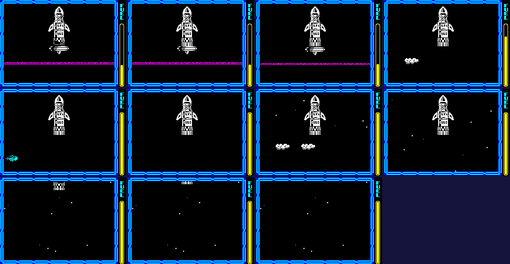
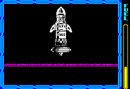
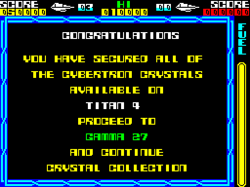

| The rocket and the ore |
The goal: build a rocket of eight parts at a fixed place, map column $52, row $0A. The parts lie at places dealt at random to each player; with the hook fitted the ship picks up only the part due next, carries it hanging below, and lets it go over the rocket, where it falls into its slot. Part 6 is an ore tank, to be filled with 18 units of ore mined with the special beam first. With all eight built the ship docks, the rocket lifts off, and the planet is secured.
rocket_part_table holds five bytes a part in delivery order: the flags and drawn place that draw_rocket keeps between passes, then the part's offset from the base (rocket_x: pixel $68 of column $52; rocket_y: line $73 of row $0A). Read from the game (the names by appearance, the frames being type $1E's list, rocket_part_frames):
| Part | What | Entry | x offset | y offset |
|---|---|---|---|---|
| 0 | a section of bars | rocket_part_table | 0 | 0 |
| 1 | a checked section | $96B5 | 0 | -9 |
| 2 | a crate-like section | $96BA | 0 | -18 |
| 3 | a crate-like section | $96BF | 0 | -34 |
| 4 | a fin | $96C4 | -14 | -30 |
| 5 | a fin | $96C9 | 22 | -30 |
| 6 | the ore tank | $96CE | 0 | -47 |
| 7 | the nose cone | $96D3 | 0 | -63 |
A stack, with a fin either side.
At a new game new_game calls deal_places for each player. It walks dealing_list and writes 19 four-byte places into the player's record from player_places: map column, row, and x and y in the cell. A value of 1 to 5 deals a place at random from that group of the pool (retrying while it is taken); 0 deals none -- unless the next value is 3, when it copies the place before, 16 to the right and 35 up. The pool is freed for each player, so the two players' worlds are dealt independently. As the view moves, load_map_window puts any of the current player's places in the window's four cells, not yet taken, into the two pick-up records (pickup_record, second_pickup_record): at most two pick-ups show at once. Player 1's places in the game this page played, read from the record:
| Place | What lies there | Group dealt from | Place dealt |
|---|---|---|---|
| 0 | add-on 1, the hook | 1 | column $46, row $08, x $A8, y $78 |
| 1 | add-on 2 | 0 | none ($FF) |
| 2 | add-on 3 | 0 | none ($FF) |
| 3 | add-on 4 | 5 | column $0D, row $07, x $B8, y $78 |
| 4 | add-on 5 | 5 | column $10, row $07, x $50, y $78 |
| 5 | add-on 6 | 2 | column $1A, row $09, x $38, y $58 |
| 6 | add-on 7 | 1 | column $58, row $09, x $68, y $97 |
| 7 | add-on 8 | 2 | column $18, row $09, x $68, y $97 |
| 8 | add-on 9 | 1 | column $27, row $06, x $68, y $97 |
| 9 | the slab (kind 9) | 1 | column $4A, row $09, x $68, y $97 |
| 10 | the spire (kind 10) | 0 | column $4A, row $09, x $78, y $74 |
| 11 | rocket part 0 | 3 | column $3E, row $10, x $68, y $9B |
| 12 | rocket part 1 | 3 | column $0A, row $15, x $68, y $9B |
| 13 | rocket part 2 | 3 | column $2D, row $17, x $68, y $9B |
| 14 | rocket part 3 | 3 | column $04, row $08, x $38, y $58 |
| 15 | rocket part 4 | 3 | column $24, row $03, x $68, y $9B |
| 16 | rocket part 5 | 3 | column $17, row $09, x $68, y $47 |
| 17 | rocket part 6 | 3 | column $1B, row $13, x $18, y $9B |
| 18 | rocket part 7 | 4 | column $18, row $1A, x $68, y $9B |
collect_pickup tests each pick-up record every pass against a box 16 pixels wide under the middle of the ship -- the hook's reach. A rocket part is taken only with add-on 1 fitted and only if it is the part due next (parts_built): 1000 points, its place marked taken, and the part hung under the hook (toggle_carried_part, which XORs the part's graphic into the ship's picture, so the same call puts it on and takes it off). drop_part, each pass while carrying, lets it go when the ship is at column $52, x exactly $5C, row 10 or above -- part 6 only with 18 ore aboard. The part becomes a type $1E object (find_record_for_part finds it a record) that falls without testing the landscape; update_rocket_part frees it at its place, adds one to the parts built and scores 1500.
Ore lies in ground objects of kinds 8, 9 and $0A. Counted from map_object_kinds (bits 0-5 of each of the 290 bytes): 9 of kind $08 (1 unit each), 5 of kind $09 (1 unit each), 10 of kind $0A (2 units each), 34 units in all, for a tank of 18. Only the special beam (add-on 7) touches ground objects: beam_hits_ground_object dissolves a deposit it hits and marks it gone for this player, and when the beam has gone load_ore adds the units -- only while the part carried is the tank. The ore is drawn into the tank under the ship, a row of ore_rows_graphic a unit, and colour_ship turns the ship yellow at 18. A death keeps the ore (ore_kept).
With all eight built, draw_rocket waits for the ship at column $52, x $5C, row 10, line $63 or lower -- inside the rocket. Then launch_state is set; the death byte is set to 10 for two calls, so that the ship's picture and trail are rubbed out, and put back to 0 at once (a docking, not a death); nothing is read from the controls, and move_ship holds thrust on at the fast climb until the view reaches map row 0. The rocket rises at the view's scroll with the lift jet under it and sound_launch; when part 0 is no longer drawn, launch_state becomes $FF and the play loop goes to level_done.
Worked example, staged: a new life put by the game's own restart at map column $51, row $0A, x $E6 -- the ship inside the rocket's place -- with parts_built written as 8 at the same moment. The ship docked on pass 1 of play and the launch ran 390 passes before launch_state reached $FF; a selection, the landscape falling away below as the view climbs with the rocket, and the rocket leaving the top of the screen once the view has reached the top of the sky:

The launch: the first passes, then on through the climb.

The launch, every third pass.
level_done clears the play area and calls planet_secured: the planet-secured screen with the finished planet's name and the next one's; ten times 5000 points, each with a zap; the level counted on (level, the fifth coming round to the first); the rocket's base reset; the part carried and the parts built set to 6; the last place dealt again, so the nose cone lies somewhere new; and the current player's gone bit cleared in all 290 world objects (mask_world_objects), so every deposit, pad and beam maker is back. The level is read only for the planet's colours and its name: every planet is the same map. The same staged game, run on into planet_secured:

The planet-secured screen, as the game printed it.
After it, read from memory: the level 1, the part carried 6 (the tank) and the parts built 6: the next planet starts with six parts standing and the empty tank aboard.